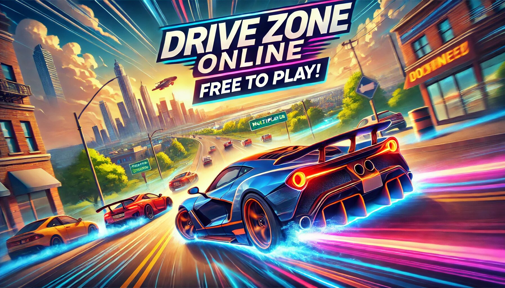

If you’ve ever dreamed of hitting the virtual roads without leaving your couch, you’ve probably heard of Drive Zone Online. This exciting driving game has been making waves in the gaming community, and for good reason. But the big question on everyone’s mind is: Is Drive Zone Online free? The short answer is yes, it is! But that’s just the tip of the iceberg. In this article, we’ll dive deep into why Drive Zone Online is worth your time, explore its best features, and why it’s a must-try for any driving enthusiast. Buckle up, because this is going to be a fun ride!
Let’s address the elephant in the room first. Yes, Drive Zone Online is completely free to play. You don’t need to pull out your credit card or sign up for a premium subscription to enjoy this game. It’s available for download on multiple platforms, including mobile devices, making it accessible to everyone. Whether you’re a casual gamer or a hardcore driving fan, you can jump right in without spending a dime.
But wait, there’s more! While the game is free, it doesn’t skimp on quality or features. You’ll find a polished, engaging experience that rivals many paid games. And if you’re worried about annoying ads ruining your fun, don’t be. The game strikes a great balance between ads and gameplay, ensuring you stay immersed in the action.
Now that we’ve established that Drive Zone Online is free, let’s talk about what makes it so special. This game isn’t just another driving simulator—it’s a full-blown driving adventure packed with features that will keep you coming back for more. Here are some of the best features that make Drive Zone Online stand out:
One of the first things you’ll notice when you start playing Drive Zone Online is how realistic the driving feels. The game uses advanced physics to simulate real-world driving conditions. Whether you’re speeding down a highway or navigating tight corners, the controls are smooth and responsive. It’s the perfect blend of arcade-style fun and realistic mechanics, making it enjoyable for both beginners and experienced players.
Drive Zone Online is a visual treat. The game features high-quality graphics that bring the open-world environment to life. From the shimmering cityscapes to the lush countryside, every detail is meticulously designed. The cars themselves are beautifully rendered, with sleek designs and realistic textures. It’s like having a mini car show on your screen!
Who doesn’t love the freedom of an open-world game? Drive Zone Online offers a massive map for you to explore at your own pace. You can cruise through bustling cities, serene rural areas, and everything in between. The open-world design encourages exploration, and you’ll often find hidden gems like shortcuts, secret routes, and scenic spots. It’s like a road trip without the traffic jams!
If you’re a car enthusiast, you’re in for a treat. Drive Zone Online boasts an impressive collection of vehicles, ranging from sleek sports cars to rugged off-roaders. Each car has its own unique handling and performance, so you can choose one that suits your driving style. Plus, the game regularly updates its car roster, so there’s always something new to look forward to.
What’s better than driving a cool car? Driving a cool car that you’ve customized to your liking! Drive Zone Online lets you personalize your vehicles with a range of customization options. You can change the color, add decals, upgrade performance parts, and more. It’s a great way to make your car stand out and reflect your personality.
Driving is more fun with friends, and Drive Zone Online delivers on that front with its multiplayer mode. You can team up with players from around the world and compete in races, challenges, or just cruise together. The multiplayer mode adds a social element to the game, making it even more engaging. Who knows? You might even make some new friends along the way.
One of the best things about Drive Zone Online is that it’s constantly evolving. The developers regularly release updates that add new content, fix bugs, and improve the overall experience. Whether it’s a new car, a fresh map, or a fun event, there’s always something to look forward to. This commitment to keeping the game fresh and exciting is a big reason why players keep coming back.
Drive Zone Online strikes the perfect balance between accessibility and challenge. The controls are intuitive and easy to pick up, so even if you’re new to driving games, you’ll feel right at home. But don’t let the simplicity fool you—mastering the game requires skill and practice. Whether it’s nailing a perfect drift or winning a high-speed race, there’s always room to improve.
In many free-to-play games, you’ll often find pay-to-win mechanics that give paying players an unfair advantage. Thankfully, Drive Zone Online avoids this pitfall. While there are in-game purchases available, they’re entirely optional and don’t affect the core gameplay. You can unlock cars, upgrades, and customization options through regular play, so you never feel pressured to spend money.
Drive Zone Online is a game that appeals to players of all ages. Whether you’re a teenager looking for some fast-paced action or an adult who just wants to unwind after a long day, this game has something for everyone. The family-friendly content and easy-to-understand mechanics make it a great choice for gamers of all skill levels.
Still on the fence about giving Drive Zone Online a try? Here are a few more reasons why this game is worth your time:
So, is Drive Zone Online free? Yes, it is—and it’s packed with features that make it one of the best free driving games out there. From its realistic driving physics and stunning graphics to its open-world exploration and multiplayer mode, there’s something for everyone to enjoy. The game’s regular updates and commitment to quality ensure that it stays fresh and exciting, while its accessibility makes it a great choice for players of all ages.
If you’re looking for a fun, free, and engaging driving game, look no further than Drive Zone Online. Download it today, hit the virtual roads, and see for yourself why this game is a fan favorite. Happy driving!